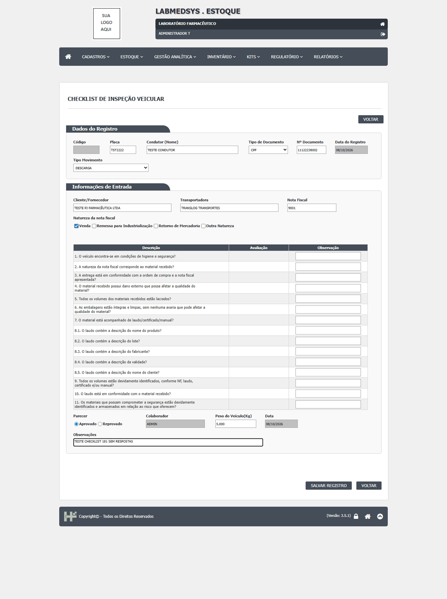
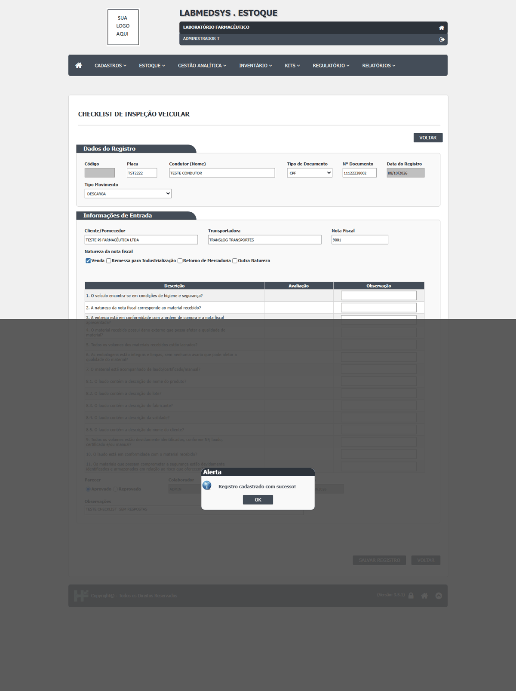

DV-EST-004 · Checklist de inspeção veicular não mostra as opções de resposta e salva "Aprovado" sem nenhuma resposta
No Checklist, a coluna **Avaliação** das 15 perguntas aparece **vazia**: não há opção para responder. Mesmo assim, o registro é salvo com Parecer **Aprovado** ("Registro cadastrado com sucesso!"). A inspeção pode ser "aprovada" sem ter sido feita, e não há como provar o que foi verificado.
Como reproduzir o erro, passo a passo
- Abrir Estoque › Checklist de Inspeção Veicular e clicar em Incluir.
- Preencher Placa TST2222, Condutor TESTE CONDUTOR, Tipo de Documento CPF, Nº Documento, Tipo Movimento DESCARGA, Cliente/Fornecedor, Transportadora e Nota Fiscal.
- Observar a coluna Avaliação das perguntas 1 a 11 (15 linhas): está vazia.
- Em Parecer, marcar Aprovado e clicar em SALVAR REGISTRO.
Esperado
Cada pergunta mostra as opções de resposta (por exemplo, Sim/Não/Não se aplica) e o registro só é salvo com todas respondidas. Parecer "Aprovado" não é aceito se alguma resposta indicar problema sem justificativa.
Obtido
Coluna Avaliação vazia; "Registro cadastrado com sucesso!" com Parecer Aprovado e nenhuma resposta.
Evidência (captura da tela)

